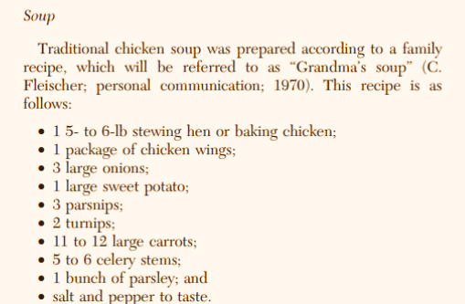

The Magic of Chicken Noodle Soup: Origins, Healing Powers, and Recipes

Chicken noodle soup has long been considered the ultimate comfort food, bringing warmth and coziness to our souls for as long as we can remember. We are going to explore the origins of this soup staple, tracing its roots back to when chicken soup and noodle soup finally merged together to make this beloved dish. We’ll uncover the secrets behind its healing powers, seeing if there is any truth behind this go-to remedy. And of course, we’ll share a few mouthwatering recipes that will have you reaching for a bowl in no time. So, let’s jump right into the history of chicken noodle soup!
Chicken soup has been a beloved dish for ages, with a rich history that’s quite easy to uncover. People have been crazy about chicken soup since the domestication of fowl around 7,000 to 10,000 years ago in Southeast Asia which led to the creation of broth. The Ancient Greeks had their own version of chicken broth and believed the soup had healing properties, and this belief has stuck around with many people throughout the adaptation and changes of this soup (Chuah, 2019). According to historian-geographer Julian Schlag in her one and only blog post on The Conversation in 2015, there is even archaeological support for the possibility that as early as when the process of boiling water was discovered, people were using poultry to make soup-like dishes soon after. While it is obvious that chicken soup had no troubles standing the test of time, chicken noodle soup was definitely not as widespread. There are counts of chicken soup and noodle soup combinations happening in China in roughly 2nd century BC when they combined Laiman with chicken broth instead of beef, and in the Song Dynasty when noodle shops became popularized and chicken noodle soup became a staple. However, the official combination of chicken soup and noodles that we all know today came about much more recently. This was a pivotal moment in the soup world and the credit goes to one of the most famous, world renowned soup brands, Campbell Soup Company!
Campbell Soup Company was founded in 1869 by Joseph A. Campbell and has since been associated with its wide array of canned soups. In 1934, they introduced “Campbell’s Chicken with Noodle,” becoming the first company to commercially combine chicken soup and noodles. According to the history on Campbell’s official website, the iconic “Chicken Noodle Soup” title came after a radio announcer misread the name for the soup and it stuck. This trusted brand and trusted recipe brought a new and different perspective on chicken soup. With the newly added carbohydrate, the dish was balanced and could be considered a main course, opening endless possibilities of how to explore this simple, delicious soup. We soon saw many people mirroring the past as they used chicken noodle soup when someone was feeling ill, under-the-weather, or even sad.
This belief that chicken noodle soup, chicken soup, or chicken broth has healing properties goes back several decades, especially in cultures that practice natural remedies and practical medicine. The earliest evidence of people enjoying chicken soup can be dated all the way back to 2nd century BC. In China, there's a medical document called Huangdi Neijing that mentions chicken soup as a "yang food," which translates to “warming dish.” This fundamental source for Chinese medicine also recommended which herbs to add the broth, dependent on which ailment the soup-ee had. Chicken broth was considered nourishing for pregnant women and new mothers, the elderly, and the infirm (Slurrp Editorial, 2023).
There have been many different views on chicken noodle soup throughout history based on its variety of forms and interpretations worldwide, but another famous mention of its healing properties is in a 12th century book called On the Cause of Symptoms written by Maimonides. He claimed that chicken broth could be a treatment for malnutrition, asthma, and even leprosy (W., 2000). This fascination has managed to stay relevant as more and more people question if these claims hold any truth.
A relatively recent study was done by Dr. Stephen Rennard MD, a researcher and scientist at the University of Nebraska Medical Center. His findings were reported in 1993 and updated in 2000. He used his wife Barbara’s soup, which was her Grandmother’s recipe, and labeled it “Grandma’s Soup”. He began to test if this soup had the ability to heal. The study “suggests that chicken soup may contain a number of substances with beneficial medicinal activity. A mild anti-inflammatory effect could be one mechanism by which the soup could result in the mitigation of symptomatic upper respiratory tract infections” (CHEST, 2000). This anti-inflammatory effect was reflected in the participants’ white blood cells, “His studies of white blood cell movement in particular showed that grandma’s chicken soup had the ability to inhibit that movement, which in turn would lead to decreased mucous production and reduced inflammation” (W., 2020). This soup is also full of nutrients, including protein, calcium, and gelatin, as well as vitamins and minerals. Chicken soup also provides electrolytes which is very helpful when an ill person is struggling with dehydration. The gelatin from the boiled bones in Chicken stock provides many health benefits. It boosts liver function, helps build bone and cartilage, and improves digestion. Despite studies like this one, it has never been completely clear to scientists how chicken noodle soup has this effectiveness. However, it is clear that chicken soup is not only delicious, warming, timeless, and the perfect meal to make you feel comfortable, but it is also beneficial in fighting sickness… even if it remains sort of a mystery that can’t be fully figured out. Doesn’t that just make it even more magical?
So whether you want to experience the calming effect of warm soup to heal your soul, the anti-inflammatory effect of chicken stock, or simply want to enjoy a familiar bowl of soup (or try a new form)… I have listed out a few that would be worth trying!
Jewish Chicken Soup with Matzo Balls